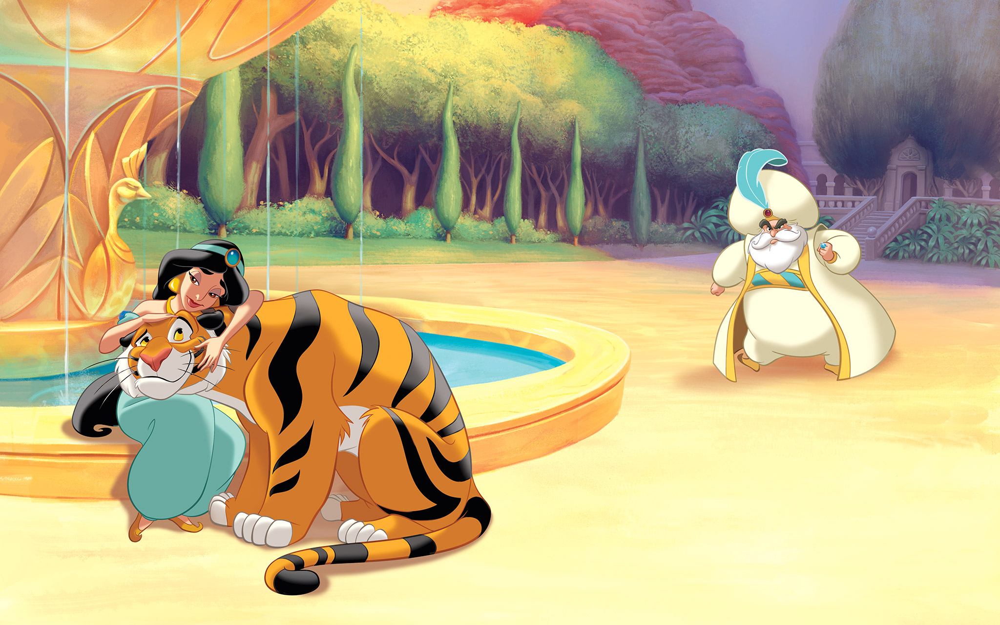
Deep in the Arabian Desert, Princess Jasmine lived with her father, the Sultan of Agrabah, and her tiger, Rajah. The Sultan had said Jasmine must marry a prince—and soon. But Jasmine wanted to marry for love, not just to make her father happy!
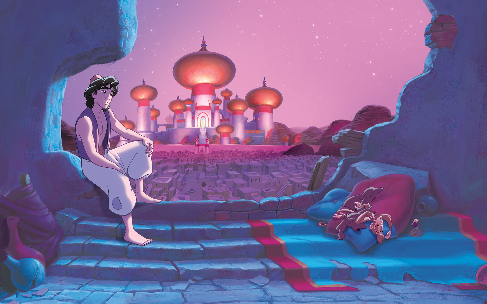
In a nearby village, there lived a young man named Aladdin. His best friend was a monkey he called Abu. Aladdin was poor, but he had big dreams. "Someday," he told Abu, "we will live in a palace!"
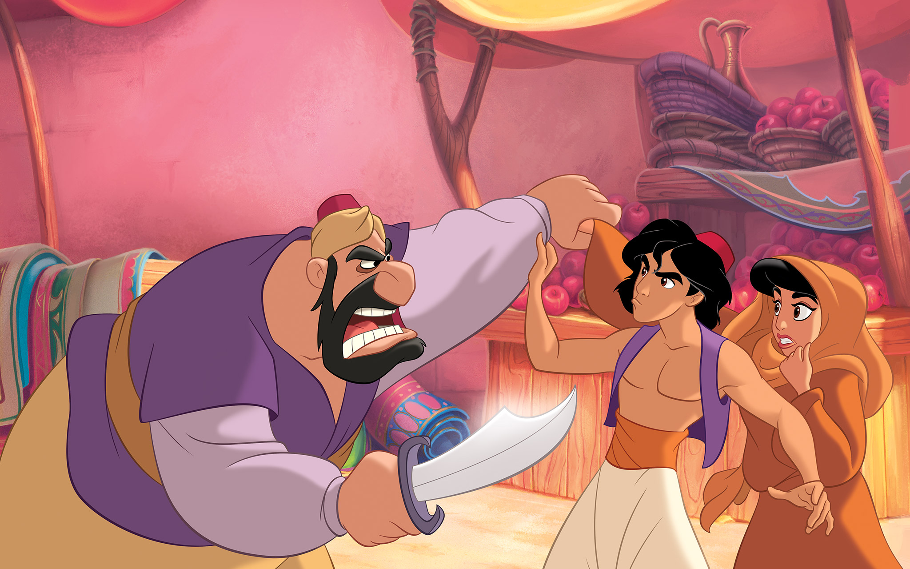
Jasmine refused to be married. So she disguised herself as a peasant and left home.In the marketplace, she accidentally stole an apple. A guard grabbed Jasmine, but Aladdin stepped in to protect her.
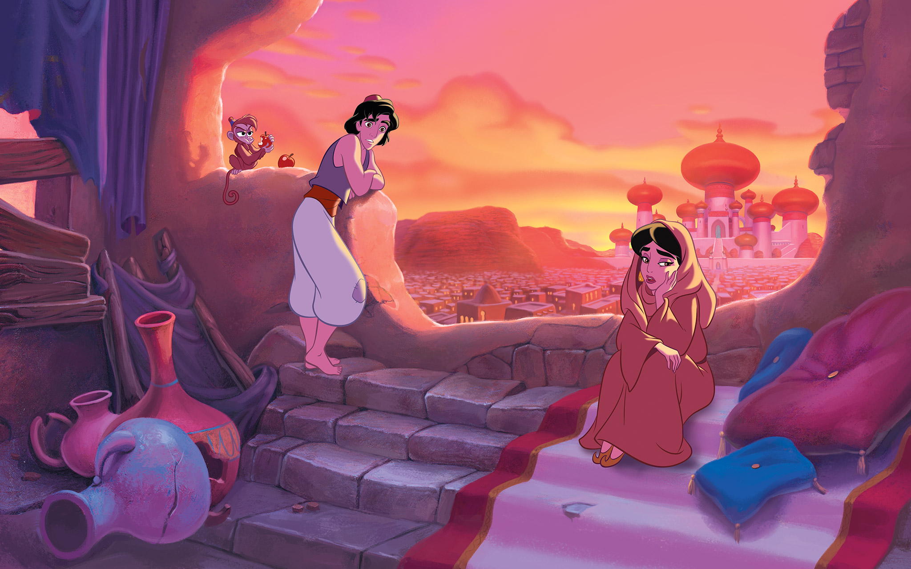
Aladdin took Jasmine to his home. As they talked, they discovered they each dreamed of living a life different than their own."I ran away, and I am not going back," said Jasmine.
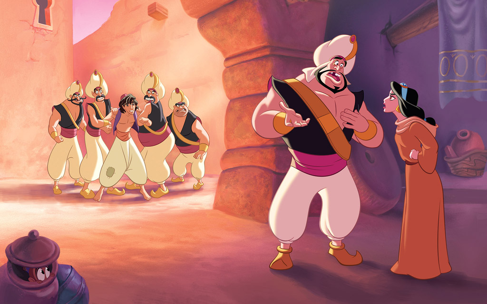
Then the palace guards burst in and seized Aladdin! Jasmine revealed herself as the princess and demanded Aladdin be freed.To her shock, the guards refused. Aladdin was taken away.
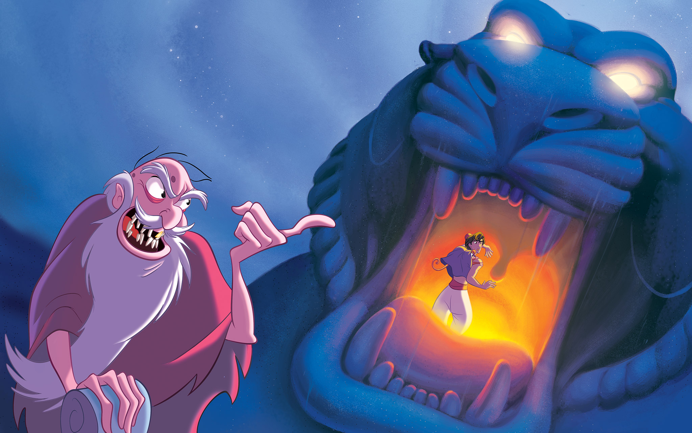
While locked in the palace dungeon, Aladdin met an old man who helped him escape.The man took Aladdin and Abu to the Cave of Wonders. He wanted Aladdin to retrieve a magic lamp hidden inside.
The man took Aladdin and Abu to the Cave of Wonders. He wanted Aladdin to retrieve a magic lamp hidden inside.Aladdin and Abu found the lamp and a magic carpet! But as they left, the Cave began to rumble and shake and turn into molten lava!At the entrance, the old man wouldn't help them. He was really the Sultan's evil assistant, Jafar!
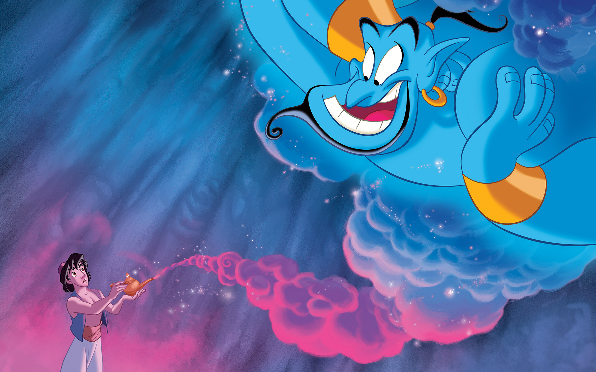
Though stuck in the Cave, Abu had tricked Jafar and kept the magic lamp for Aladdin.When Aladdin rubbed it, a genie whirled out of the lamp to rescue them from the Cave and to grant Aladdin three wishes!
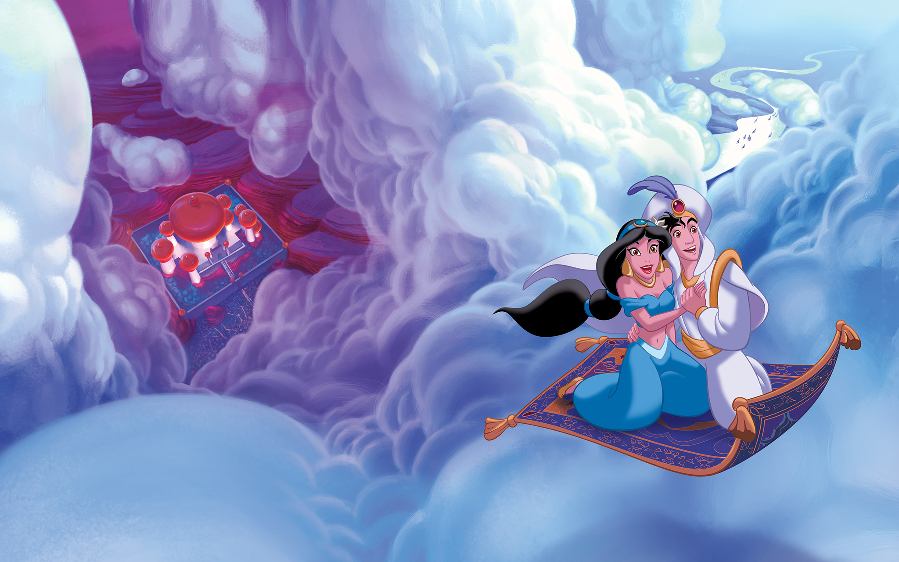
Aladdin's first wish was to be a prince. Disguised as a wealthy prince visiting from another kingdom, Aladdin went to see Princess Jasmine once again.That night, Aladdin took Jasmine on a magic carpet ride that they would never forget.
Flying over deserts, mountains, and seas, Jasmine and Aladdin discovered a whole new world.The wonder and magic of the night brought them closer together. They were falling in love.
"Good night, my handsome prince," whispered Jasmine at the end of their flight.Then Aladdin kissed her. Aladdin was so happy, he felt as if he was floating on air.
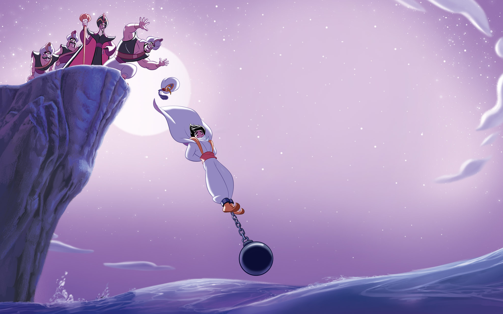
But Jafar had an evil plan. He ordered his guards to throw Aladdin into the sea.Aladdin used his second wish to have the Genie rescue him. But then Jafar stole the magic lamp!
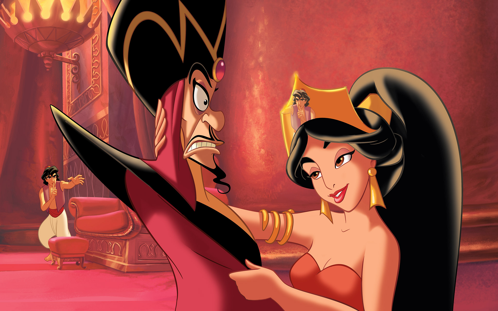
Now the Genie had to serve Jafar! And the wicked sorcerer was holding Jasmine prisoner!As Aladdin sneaked into the palace to save her, Jasmine used her charms to distract Jafar.
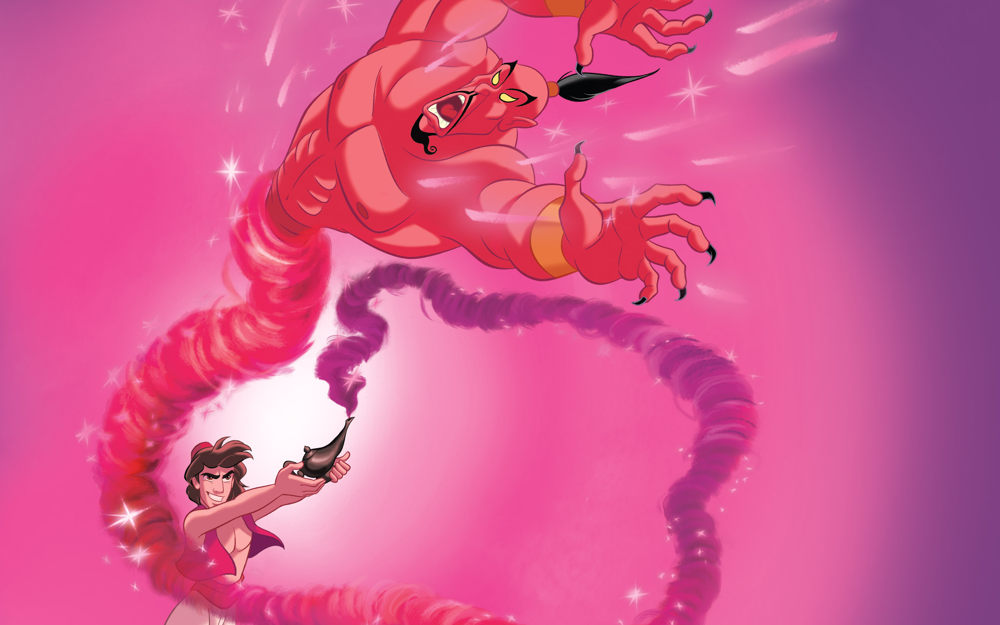
Aladdin tricked Jafar into using one of his wishes. "I wish to be an all-powerful genie!" proclaimed Jafar.
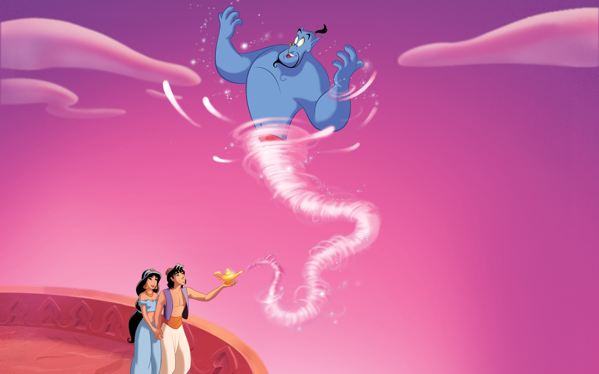
He became an evil genie, and Aladdin trapped him inside a magic lamp for all time!The Sultan told Jasmine that she could marry whomever she chose. Princess Jasmine chose to marry her one true love—Aladdin!

He became an evil genie, and Aladdin trapped him inside a magic lamp for all time!